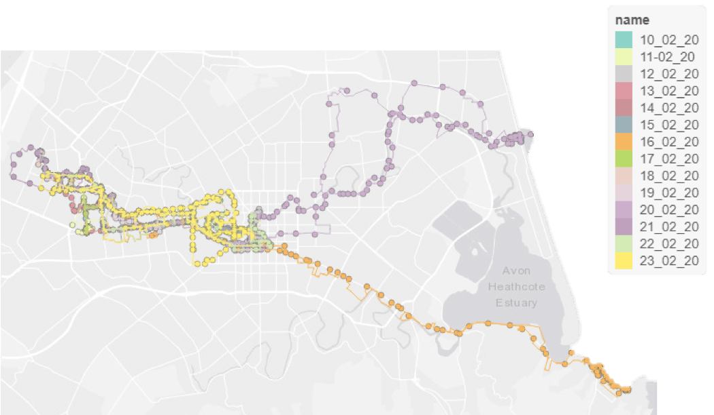

Address
Leeds Institute for Data Analytics
Level 11
Worsley Building
Clarendon Way
Leeds
Contacts
Email: fs14fp@leeds.ac.uk
I have spent the first part of 2020 completing an Overseas Institutional Visit (OIV) to the GeoHealth Lab at the University of Canterbury in Chirstchurch, New Zealand. Funded by the ESRC, I have been conducting a project using smartphone GPS data to investgiate activity space. Looking at how different measures of activity space vary in the environmental featrues they captured and subsquently the conclusions we may draw about the influence of the enviornment on activity.
Using the followmee app to trace my movement arround Christchurch for 2 weeks. Eventually data recorded by undergraduate student data will be used.
Different measures of activty space were applied to the GPS data.

A large component of the project involved developing a reproduicble formula to clean GPS data, to trace shortest routes along street networks. (See GitHub repository for the code)
For each unique activity day the level of environemtnal exposures recorded by each methods were compared.
Reproducible code to read in, clean and apply different activity space methods to GPS data. (gpx/shp/csv e.g. Strava, folowmee...)
Watch this space
Leeds Institute for Data Analytics
Level 11
Worsley Building
Clarendon Way
Leeds
Email: fs14fp@leeds.ac.uk
This site was designed with Mobirise